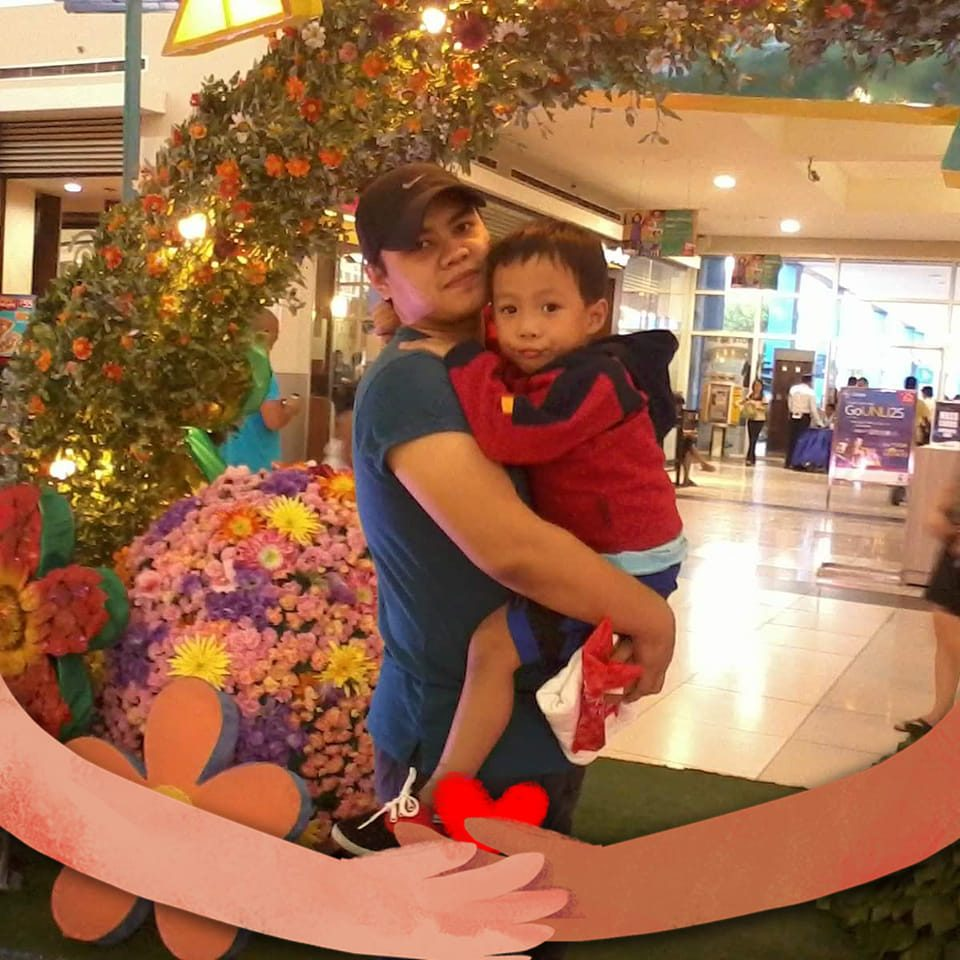

Seven years ago, a loving couple named Jolan and Ann decided to turn their passion for cooking and family bonding into a small pizza business. With only a simple oven, a few ingredients, and a dream to build a better future together, they started their journey from scratch in their local community. Despite having limited capital, the couple worked hard every day, preparing homemade pizzas with dedication, patience, and love.

Family first — the heart behind every pizza.At first, Jolan and Ann sold pizzas to neighbors, friends, and nearby customers. Their delicious recipes, fresh ingredients, and affordable prices quickly gained attention. Customers appreciated not only the quality of their pizzas but also the warm and friendly service that the couple provided. Through word of mouth and loyal customers, the business slowly grew stronger each year.
The couple faced many challenges during the early stages of the business, including financial difficulties, long working hours, and competition from larger pizza stores. However, their determination and teamwork helped them overcome every obstacle. Jolan focused on preparing the pizzas and improving the recipes, while Ann managed customer service and daily operations. Together, they built the business with trust, hard work, and commitment.
Today, after seven years of continuous effort, Jolan and Ann Pizza has become known for serving tasty and high-quality pizzas such as Pepperoni, Hawaiian, Ham and Cheese, and Special Pizza. The business continues to grow while maintaining the values that started it all: love, perseverance, and passion for serving delicious food to the community.
Their story inspires others to believe that with teamwork, dedication, and faith in one’s dreams, a small idea can grow into a successful business.